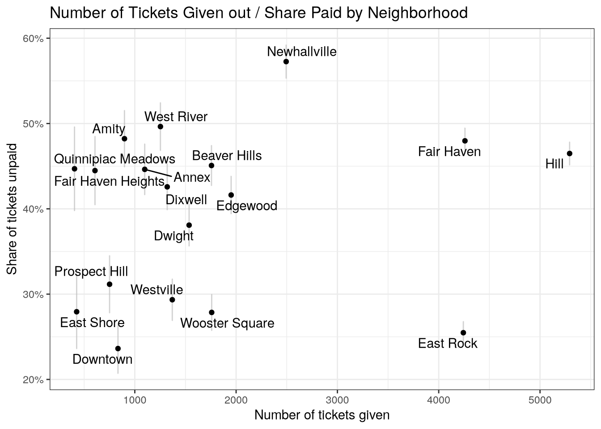
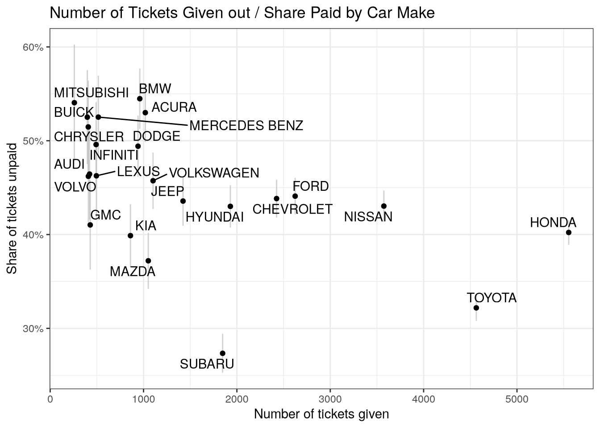

New Haven Street Sweeping Tickets
This week, I missed the warnings that my street was going to be cleaned, and got a ticket. I’m normally very conscientious about moving my car, but I didn’t drive the day that the signs were put up, and came down to a ticket the next morning. Most surprisingly, the ticket was for a steep $100! I can pay the fee, but I imagine this is a substantial burden for many people. I was also surprised to learn that the there doesn’t appear to be a payment plan, and the ticket becomes $200 if you don’t pay it in two weeks.
I had recently read this blog post by Matt Chapman analyzing tickets given out by the city of Chicago, and wanted to learn about the tickets given out in New Haven. I wanted know the number of tickets given out, and to understand whether people have trouble paying tickets, so I filed a FOIA request for every ticket given out for street sweeping over the past 3 years. The process taught me a lot about the ticketing process, which has to ensure that no cars are parked on the street during street sweeping, while balancing this against the burden penalties place on drivers.
The FOIA Request
As it turns out, the City of New Haven has a fantastic online FOIA portal through which you can file a request (you can also go in-person or write to the city clerk in the mail). I wrote a few sentences describing what I would like (you can check out how I filled out the form here if it’s helpful for you), and sent it off. Amazingly, my request was fulfilled completely in fewer than 24 hours.
Based on this experience, I would highly recommend sending off a request if there’s any data the city might have that you are interested in. Importantly, you can ask for any record the city has, but you can’t ask them to create new data for you; I was able to ask for every street sweeping ticket, but I likely wouldn’t have success asking the city to aggregate the number of tickets by time of day (although you never know - they were very helpful).
If you are interested in filing a FOIA request to obtain ticket data, I suspect you could request even more information than I did and still be successful. The ticket I received had my license plate and the state the car was registered in which I did not ask for in my FOIA request, but wish I had access to.
Digging into the data
First, I wanted to understand how many tickets were being given out. The City of New Haven has given out 35463 tickets for street sweeping since the beginning of 2021. Below, you can see how they accumulate over the period of data I have access to:
Over the approximately three years I look at, there city of New Haven gave out $3507478 in violations, which escalated to $5578428 in fines and late fees (although late fees were suspended for most of COVID). Out of the $5578428, the city received only $1962178, or about 35%.
Late Fees and Failing to Pay
Immediately, the share of unpaid tickets jumped out at me as an exciting avenue for further exploration. I wanted to see if I could identify characteristics that predict the chance the ticket would go unpaid, and started by plotting the share of unpaid tickets by the neighborhood that the ticket was issued in:

I’ve been living in New Haven for two years and don’t know all the neighborhoods but I think parking tickets in the richest neighborhoods are paid fastest. A ticket given in the most student-y neighborhoods (Wooster, East Rock and Downtown) has about a 70% chance of being paid at the time the data was given to me, while a ticket given out in Fair Haven or Newhallville has a 50% or less chance of being paid.
This said, we can’t conclude that it’s because the richer neighborhoods are richer that they tend to pay their tickets faster - it’s generally a bad idea to infer individual-level phenomena from group-level averages, because the neighborhood-level relationship between wealth and payment could obscure a different individual-level relationship. The differences between neighborhoods could happen for any number of reasons; it could be that these locations attract fewer out of state drivers who (I believe, although it’s not in the data) are less likely to pay tickets, or it could be that it has something to do with the student population in these neighborhoods.
In fact, it’s also easy to find other group-level data that tells the opposite story; if you plot the share of claims left unpaid by the make of the car (which is likely a proxy for income), you find that tickets given to the more expensive car brands are the ones most likely to go unpaid:

Both associations are very interesting. I’d love to try and find a way to explore the relationship more between income and the likelihood of paying a ticket.
Conclusion
The process of requesting and exploring the data has taught me a lot about the work that goes into policing parking in New Haven. I was most surprised to learn the proportion of fees that go unpaid, and I wonder how effective of a deterrent the fees are if some people appear they are able to just ‘shrug them off.’ Presumably, they will run into problems when they try and re-register their car. I’m not sure. I also learned that before there was ticketing, the city would tow drivers who forgot that street sweeping was taking place. I am glad that they made this change!
I am very appreciative of the city employees who provided me with the data, and responded to the questions I had when exploring the data. The city was astonishingly fast and responsive to my requests, and I wish I got this kind of help all the time when I was working with a new dataset!
Finally I have to highlight that in the course of writing this post, I found these two incredible New Haven Independent radio episodes which invite you to guess whether an appeal for a ticket was successful. Amazingly, the first has a successful appeal from a sovereign citizen. I would try this if I hadn’t already paid my ticket. I’d love to ask for some of the appeals data as well in the future, but don’t want to put a burden on the office that handles the FOIA requests.